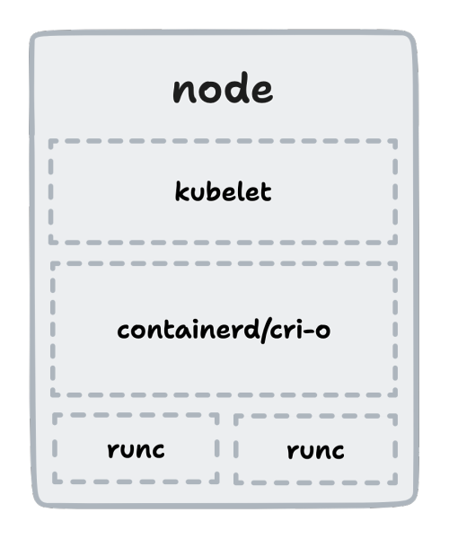

<style> @import url(https://fonts.googleapis.com/css?family=Nunito:400,700,400italic); .reveal { font-family: 'Nunito'; font-size: 1.5em; } .reveal h1, .reveal h2, .reveal h3, .reveal h4, .reveal h5 { font-family: 'Nunito'; text-transform: none; } </style> # Container checkpoints with Go and CRIU
# Who dis? o_O <img alt="me" src="assets/profile.jpg" height="225px" /> ## Prajwal S N Go <> Rust \ GSoC'22,'23@CRIU \ SAOC'23@DLang \ [snprajwal.com](https://snprajwal.com)
# What is C/R? - Identify a running process with all related resources - Write everything to a set of files (checkpoint) - Move files to the intended destination - Restore the process from the files (restore)
# Why C/R? - Software breaks all the time - Backups are hard - Security vulnerabilities exist - Long startup times - Need for reproducible state
# Reveal thy secrets, CRIU! - Attach to the process with `ptrace` - Collect process tree and freeze it - Inject parasite code and collect process resources - Serialise data into binary files (images) with protobuf - Remove parasite code and detach from the process
# Why is it hard? - Must have same versions of libraries on source and destination - Parent-child relations in process trees must be kept intact - PIDs must remain consistent across the process tree - Cannot checkpoint isolated parent processes - Cannot checkpoint processes that use `ptrace` themselves (GDB, strace)
# It gets harder!  You gotta make it work. Thrice.
# Behold, go-criu! - Created to conveniently perform C/R natively in Go projects - Provides two main libraries: - `phaul` for live migration of processes - `crit` for inspecting and manipulating checkpoints (GSoC'22) - Used by runc, LXD, Podman, checkpointctl
# Unlocking the possibilities - Blazingly Fast™ startup times - Live migration of containers (`phaul`) - Forensic analysis of containers (`checkpointctl`) - Stateful reboots - Dry runs of updates
# It's showtime!
# May the Force be with you! ### [snprajwal.com](https://snprajwal.com)